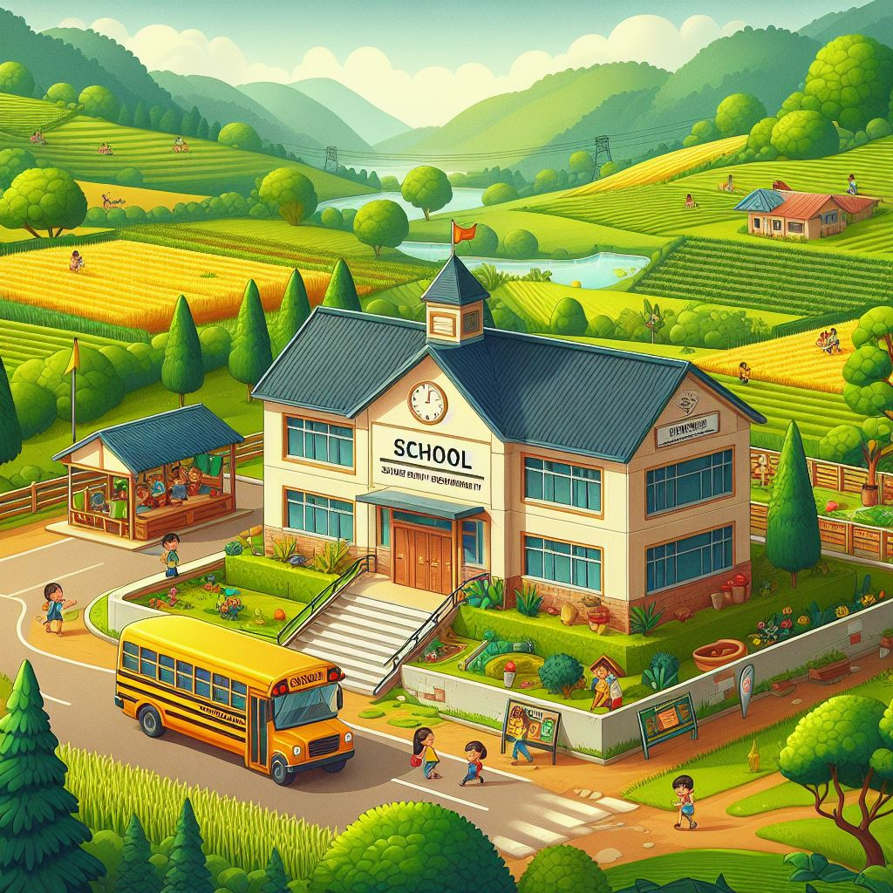

NOTICIAS
Inauguración de Nueva Escuela en Comunidad Rural
Autor: Equipo de Comunicaciones de EducaFuturo
EducaFuturo se complace en anunciar la inauguración de una nueva escuela en la comunidad rural de Santa Coloma de Gramanet. La escuela, financiada por donaciones y fondos recaudados por la ONG, proporcionará educación de calidad a más de 200 niños de la zona. La ceremonia de inauguración contó con la presencia de líderes comunitarios, miembros del equipo de EducaFuturo y donantes que hicieron posible este proyecto. La nueva escuela está equipada con aulas modernas, biblioteca, laboratorio de ciencias y áreas de recreo. Este hito marca un paso significativo hacia la reducción de la brecha educativa en áreas rurales.
Fuente: EducaFuturo Noticias
Lugar y Fecha de Publicación: El periódico, 15 de febrero de 2024
Estudiante Rural Recibe Beca de
EducaFuturo
Autor: Equipo de Comunicaciones de EducaFuturo
María Gutiérrez, una estudiante destacada de una comunidad rural, ha sido galardonada con una beca completa de EducaFuturo. La beca cubrirá sus gastos educativos durante los próximos cuatro años, permitiéndole continuar con sus estudios y perseguir sus sueños académicos. María, quien ha demostrado un compromiso excepcional con su educación a pesar de los desafíos económicos de su familia, planea estudiar medicina para servir a su comunidad en el futuro. Esta beca es un ejemplo del compromiso de EducaFuturo con el empoderamiento de los estudiantes de áreas rurales.
Fuente: EducaFuturo Noticias
Lugar y Fecha de Publicación: El periódico, 27 de febrero de 2024
EducaFuturo Lanza Programa de Alfabetización para Adultos
Autor: Equipo de Comunicaciones de EducaFuturo
EducaFuturo se complace en anunciar el lanzamiento de un nuevo programa de alfabetización para adultos en comunidades marginadas. El programa, diseñado para ayudar a adultos que no han tenido acceso a la educación formal, proporcionará clases de lectura, escritura y habilidades básicas de matemáticas. Los voluntarios de EducaFuturo trabajarán en colaboración con líderes comunitarios para facilitar las clases y brindar apoyo individualizado a los participantes. Este programa refleja el compromiso continuo de EducaFuturo de empoderar a todas las personas a través de la educación.
Fuente: EducaFuturo Noticias
Lugar y Fecha de Publicación: El periódico, 4 de marzo de 2024